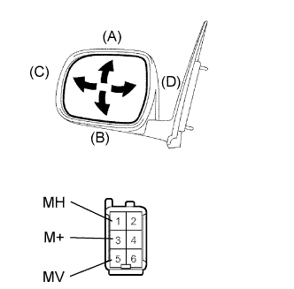
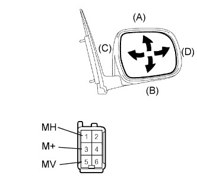

OUTER REAR VIEW MIRROR > INSPECTION |
| 1. INSPECT OUTER REAR VIEW MIRROR ASSEMBLY LH |
|  |
Disconnect the mirror connector.
Apply battery voltage and check the operation of the mirror.
| Measurement Condition | Specified Condition |
| Battery positive (+) → Terminal 5 (MV) Battery negative (-) → Terminal 3 (M+) | Turns upward (A) |
| Battery positive (+) → Terminal 3 (M+) Battery negative (-) → Terminal 5 (MV) | Turns downward (B) |
| Battery positive (+) → Terminal 1 (MH) Battery negative (-) → Terminal 3 (M+) | Turns left (C) |
| Battery positive (+) → Terminal 3 (M+) Battery negative (-) → Terminal 1 (MH) | Turns right (D) |
| 2. INSPECT OUTER REAR VIEW MIRROR ASSEMBLY RH |
|  |
Disconnect the mirror connector.
Apply battery voltage and check the operation of the mirror.
| Measurement Condition | Specified Condition |
| Battery positive (+) → Terminal 5 (MV) Battery negative (-) → Terminal 3 (M+) | Turns upward (A) |
| Battery positive (+) → Terminal 3 (M+) Battery negative (-) → Terminal 5 (MV) | Turns downward (B) |
| Battery positive (+) → Terminal 1 (MH) Battery negative (-) → Terminal 3 (M+) | Turns left (C) |
| Battery positive (+) → Terminal 3 (M+) Battery negative (-) → Terminal 1 (MH) | Turns right (D) |